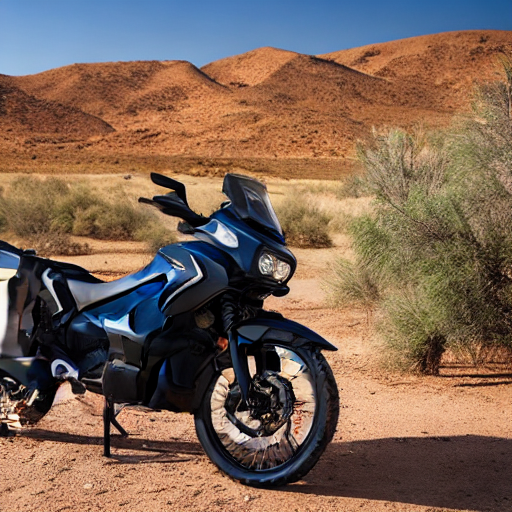
cand_52bef0c2b1dd
Role: baseline_prompt
Seed: 592010749
z: [0.0, 0.0, 0.0, 0.0, 0.0]
User rating: 2
Real GPU Example
This is a real end-to-end steering run executed against the Diffusers backend on GPU. It is designed to show the core value of the system: starting from a user text prompt, proposing multiple steerable directions, recording preference-guided choices, and moving the session toward a clearer creative target over multiple rounds.
Demonstrate that StableSteering can start from a rich user text prompt and then guide image generation toward a sharper, more premium product-marketing result through iterative user preferences rather than one-shot prompting.
Initial prompt: A premium cinematic product hero photo of an expedition-ready electric explorer motorcycle, photographed in a desert sunrise studio set with brushed titanium surfaces, crisp rim lighting, and magazine-cover composition
Negative prompt: blurry, low contrast, flat lighting, distorted wheels, text, watermark, cluttered background, cropped subject
Sampler: random_local | Updater: winner_average | Feedback mode: scalar_rating
Output file: E:\Projects\StableSteering\output\examples\real_e2e_example_run\real_e2e_example_run.html
{
"active_device": "cuda",
"backend": "diffusers",
"configured_device": "cuda",
"cuda_available": true,
"default_model_source": "models\\runwayml--stable-diffusion-v1-5",
"default_num_inference_steps": 30,
"loaded_model_sources": [
"models\\runwayml--stable-diffusion-v1-5"
],
"local_files_only": true,
"model_source": "models\\runwayml--stable-diffusion-v1-5",
"pipeline_loaded": true,
"test_only_backend": false,
"torch_available": true
}
These checks do not prove semantic correctness, but they do catch common generation failures such as blank-looking outputs, unreadable files, low-detail artifacts, and accidental duplication.
| Image | Candidates | Size | Entropy | Contrast | Edges | Status |
|---|---|---|---|---|---|---|
images/cand_14940aebf9ed.png | cand_14940aebf9ed | 512x512 | 7.745 | 60.553 | 26.51 | ok |
images/cand_2720b8bbbfb9.png | cand_2720b8bbbfb9 | 512x512 | 7.434 | 80.97 | 27.115 | ok |
images/cand_3eab0beeccf5.png | cand_3eab0beeccf5 | 512x512 | 7.673 | 60.471 | 34.245 | ok |
images/cand_4125fa7ef11a.png | cand_4125fa7ef11a | 512x512 | 7.45 | 63.469 | 22.06 | ok |
images/cand_45c53f59e23b.png | cand_45c53f59e23b | 512x512 | 7.541 | 63.369 | 29.561 | ok |
images/cand_4c52b3f7c949.png | cand_4c52b3f7c949, cand_23f831bca8b3 | 512x512 | 7.714 | 67.856 | 24.434 | ok |
images/cand_52bef0c2b1dd.png | cand_52bef0c2b1dd | 512x512 | 7.683 | 60.24 | 33.673 | ok |
images/cand_6959cc7af2d1.png | cand_6959cc7af2d1 | 512x512 | 7.886 | 70.821 | 25.685 | ok |
images/cand_7dc55497e280.png | cand_7dc55497e280 | 512x512 | 7.667 | 81.476 | 23.542 | ok |
images/cand_86ee1dc976e9.png | cand_86ee1dc976e9 | 512x512 | 7.708 | 55.553 | 36.101 | ok |
images/cand_8e910d46a02d.png | cand_8e910d46a02d, cand_6bee33430f4f | 512x512 | 7.327 | 49.937 | 41.176 | ok |
images/cand_9ef1e60d8322.png | cand_9ef1e60d8322 | 512x512 | 7.615 | 65.614 | 30.684 | ok |
images/cand_a2146d3e5361.png | cand_a2146d3e5361 | 512x512 | 7.822 | 63.714 | 26.199 | ok |
images/cand_bd67ec3f3112.png | cand_bd67ec3f3112 | 512x512 | 7.534 | 66.868 | 20.662 | ok |
images/cand_bf044f7f1fc0.png | cand_bf044f7f1fc0 | 512x512 | 7.846 | 73.536 | 43.178 | ok |
images/cand_c2d2ab2cd8de.png | cand_c2d2ab2cd8de | 512x512 | 7.517 | 57.118 | 22.146 | ok |
images/cand_dcdcfa9f7d4b.png | cand_dcdcfa9f7d4b | 512x512 | 7.894 | 77.625 | 24.606 | ok |
images/cand_ee138a85f3ed.png | cand_ee138a85f3ed | 512x512 | 7.424 | 53.124 | 17.396 | ok |
images/cand_f2491f25501f.png | cand_f2491f25501f | 512x512 | 7.773 | 69.559 | 27.13 | ok |
images/cand_f2ddc4963088.png | cand_f2ddc4963088 | 512x512 | 7.595 | 72.639 | 30.592 | ok |
images/cand_f830b6669999.png | cand_f830b6669999, cand_a966794260c5, cand_b283d484203a | 512x512 | 7.789 | 68.89 | 33.759 | ok |
All automated visual sanity checks passed for the unique generated images in this bundle.
Round 1
Round id: rnd_7deed2609893Latency: 75 msIncumbent z before update: [0.0, 0.0, 0.0, 0.0, 0.0]

cand_52bef0c2b1dd
Role: baseline_prompt
Seed: 592010749
z: [0.0, 0.0, 0.0, 0.0, 0.0]
User rating: 2
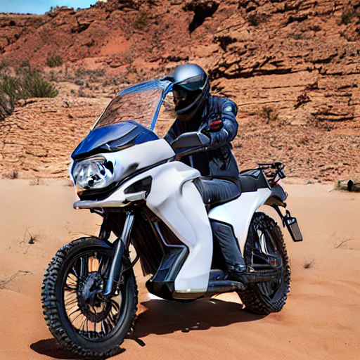
cand_f830b6669999
Role: exploit
Seed: 1208889479
z: [-0.042772547602556193, -0.014063239161101256, 0.11575917469678772, -0.08767343016214704, -0.02453400890613778]
User rating: 5
Selected as winner for the next phase.
cand_2720b8bbbfb9
Role: explore
Seed: 1443463885
z: [0.12251039923918715, -0.5552401415129667, -0.3000603961435783, 0.21699927861212276, -0.12946859227620405]
User rating: 4
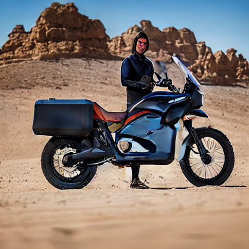
cand_bd67ec3f3112
Role: explore
Seed: 801422611
z: [0.1376778638609232, -0.15890097171691792, 0.5144534631058509, 0.353378945775632, -0.1892824803364687]
User rating: 3
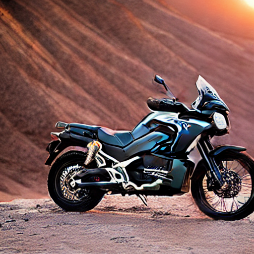
cand_c2d2ab2cd8de
Role: explore
Seed: 4063807954
z: [-0.1477477643400307, -0.12321616263937404, 0.16510292418649464, -0.5185324939828603, 0.28431398346206593]
User rating: 1
The unmodified prompt baseline is promising, but candidate 2 has the clearest silhouette, the strongest sunrise rim light, and the most premium hero-shot composition. The extra alternatives are useful, but they do not beat the top two.
{
"ratings": {
"cand_2720b8bbbfb9": 4,
"cand_52bef0c2b1dd": 2,
"cand_bd67ec3f3112": 3,
"cand_c2d2ab2cd8de": 1,
"cand_f830b6669999": 5
},
"winner_candidate_id": "cand_f830b6669999"
}
{
"method": "average",
"updater": "winner_average",
"winner_candidate_id": "cand_f830b6669999"
}
Round 2
Round id: rnd_6901efff3fe5Latency: 75 msIncumbent z before update: [-0.021386, -0.007032, 0.05788, -0.043837, -0.012267]
cand_a966794260c5
Role: incumbent
Seed: 1208889479
z: [-0.042772547602556193, -0.014063239161101256, 0.11575917469678772, -0.08767343016214704, -0.02453400890613778]
User rating: 5
Selected as winner for the next phase.
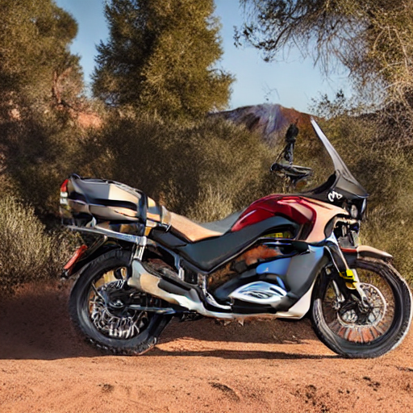
cand_3eab0beeccf5
Role: exploit
Seed: 2995389766
z: [0.01845904314505938, 0.10944892494208815, -0.030175260929510256, 0.06458539683827945, 0.01664393578896975]
User rating: 4
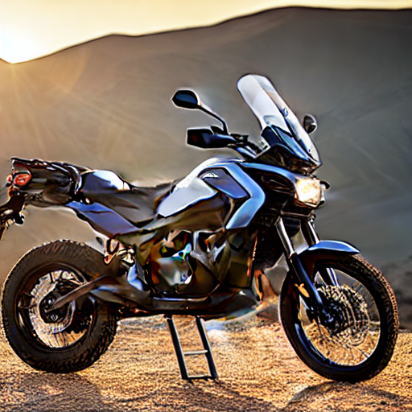
cand_f2491f25501f
Role: explore
Seed: 1918200566
z: [0.39184146480267323, 0.20563097672320552, 0.14602742185647455, -0.0517765488038464, 0.028076549939807738]
User rating: 2
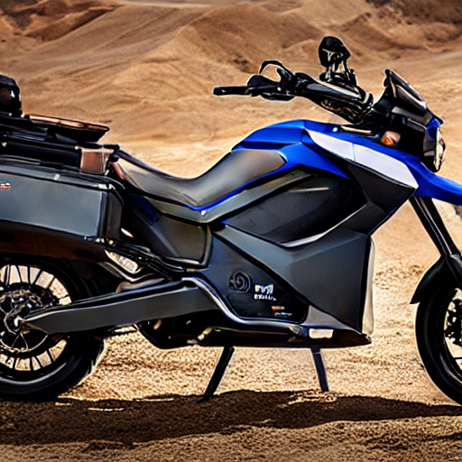
cand_f2ddc4963088
Role: explore
Seed: 2358157880
z: [-0.05738653856962496, -0.4165588702250713, -0.09729598480126157, 0.060767217953868385, -0.005805103194193292]
User rating: 3
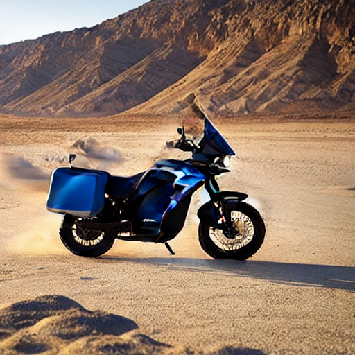
cand_a2146d3e5361
Role: explore
Seed: 1677167736
z: [0.05967416029839408, 0.04011229778927569, 0.4072491992568575, 0.1144446322082056, -0.15651013407377815]
User rating: 1
Keep the carried-forward winner, but push harder toward cleaner panel detail and a stronger studio-product framing.
{
"ratings": {
"cand_3eab0beeccf5": 4,
"cand_a2146d3e5361": 1,
"cand_a966794260c5": 5,
"cand_f2491f25501f": 2,
"cand_f2ddc4963088": 3
},
"winner_candidate_id": "cand_a966794260c5"
}
{
"method": "average",
"updater": "winner_average",
"winner_candidate_id": "cand_a966794260c5"
}
Round 3
Round id: rnd_b631f12f94fbLatency: 75 msIncumbent z before update: [-0.032079, -0.010548, 0.08682, -0.065755, -0.018401]
cand_b283d484203a
Role: incumbent
Seed: 1208889479
z: [-0.042772547602556193, -0.014063239161101256, 0.11575917469678772, -0.08767343016214704, -0.02453400890613778]
User rating: 4
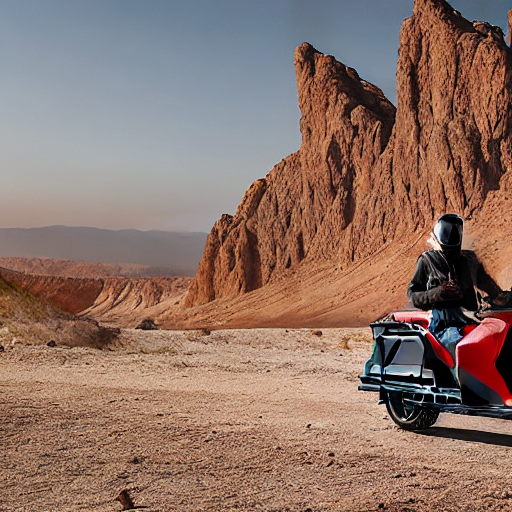
cand_8e910d46a02d
Role: exploit
Seed: 2907759065
z: [-0.07764178717333577, -0.023712339368800597, 0.07481753995222297, -0.1004076251803572, -0.03802791563217334]
User rating: 5
Selected as winner for the next phase.
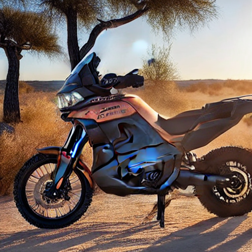
cand_6959cc7af2d1
Role: explore
Seed: 3836734524
z: [0.31740623041848715, 0.2043533377495334, 0.13772751208215503, 0.050876883671753484, 0.002311921849529594]
User rating: 3
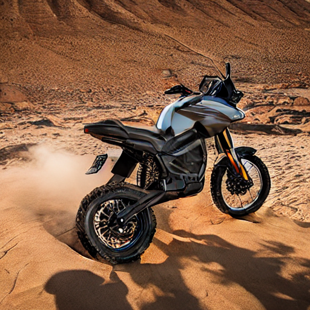
cand_86ee1dc976e9
Role: explore
Seed: 1637761500
z: [0.0055865161475028915, -0.4377214476874147, -0.15611161861805653, 0.05736826883276784, -0.03572174571944681]
User rating: 2
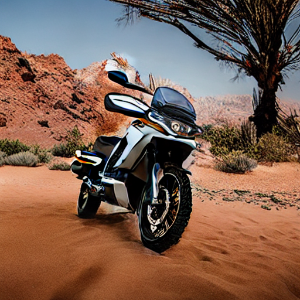
cand_45c53f59e23b
Role: explore
Seed: 4211040933
z: [0.0708325621930888, -0.07924527921986226, 0.5151752053109162, 0.09891104539474227, -0.12654661902359485]
User rating: 1
Candidate 2 improves the bodywork and surfacing. It feels more like a premium launch image while staying true to the concept.
{
"ratings": {
"cand_45c53f59e23b": 1,
"cand_6959cc7af2d1": 3,
"cand_86ee1dc976e9": 2,
"cand_8e910d46a02d": 5,
"cand_b283d484203a": 4
},
"winner_candidate_id": "cand_8e910d46a02d"
}
{
"method": "average",
"updater": "winner_average",
"winner_candidate_id": "cand_8e910d46a02d"
}
Round 4
Round id: rnd_524587f10b13Latency: 75 msIncumbent z before update: [-0.05486, -0.01713, 0.080819, -0.083081, -0.028214]
cand_6bee33430f4f
Role: incumbent
Seed: 2907759065
z: [-0.07764178717333577, -0.023712339368800597, 0.07481753995222297, -0.1004076251803572, -0.03802791563217334]
User rating: 4
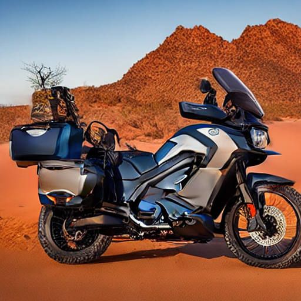
cand_4c52b3f7c949
Role: exploit
Seed: 1539221736
z: [-0.008434655250559371, -0.024686820335159877, -0.0385750962074852, 0.006855480342143186, -0.05589332143455954]
User rating: 5
Selected as winner for the next phase.
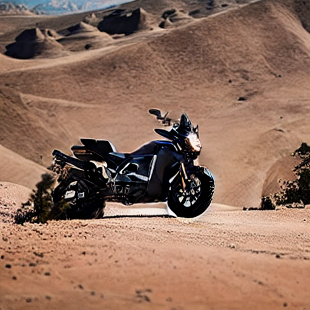
cand_ee138a85f3ed
Role: explore
Seed: 2732066775
z: [0.25106783260020277, 0.1418856739022644, 0.09304348755643484, -0.001985942494373403, -0.09966626525801711]
User rating: 3
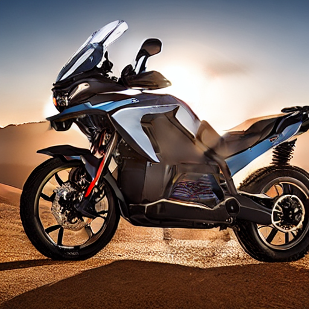
cand_dcdcfa9f7d4b
Role: explore
Seed: 3640984159
z: [-0.006824282445481465, -0.4736975668342573, -0.04635382280585208, 0.04948689229805975, -0.028382487747554946]
User rating: 2
cand_14940aebf9ed
Role: explore
Seed: 1556699629
z: [-0.03326790567187796, -0.022838603792917404, 0.5149773373869441, 0.13490351109670431, -0.13217802124646966]
User rating: 1
Candidate 2 has the best balance of dramatic lighting and realistic product geometry. Keep that direction for the next phase.
{
"ratings": {
"cand_14940aebf9ed": 1,
"cand_4c52b3f7c949": 5,
"cand_6bee33430f4f": 4,
"cand_dcdcfa9f7d4b": 2,
"cand_ee138a85f3ed": 3
},
"winner_candidate_id": "cand_4c52b3f7c949"
}
{
"method": "average",
"updater": "winner_average",
"winner_candidate_id": "cand_4c52b3f7c949"
}
Round 5
Round id: rnd_a0af359a6b95Latency: 75 msIncumbent z before update: [-0.031647, -0.020908, 0.021122, -0.038113, -0.042054]
cand_23f831bca8b3
Role: incumbent
Seed: 1539221736
z: [-0.008434655250559371, -0.024686820335159877, -0.0385750962074852, 0.006855480342143186, -0.05589332143455954]
User rating: 5
Selected as winner for the next phase.
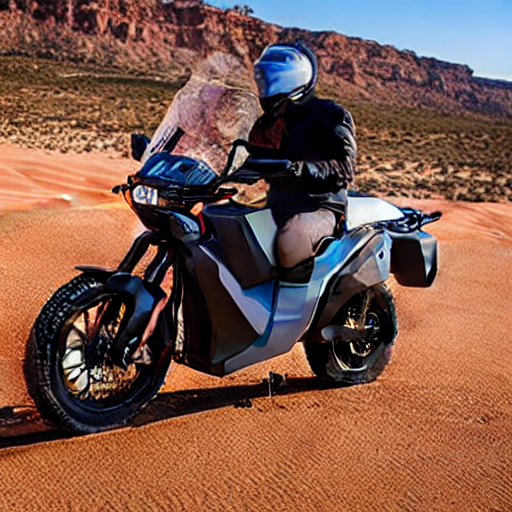
cand_9ef1e60d8322
Role: exploit
Seed: 2261477485
z: [0.00411490338002452, -0.09656803063078369, -0.030911244007340993, 0.05462360579199583, -0.10214910530427743]
User rating: 4
cand_bf044f7f1fc0
Role: explore
Seed: 1318210946
z: [0.3546766593815566, 0.10045525332928329, 0.1370927688139299, 0.021994425356544424, -0.11825963738139211]
User rating: 3
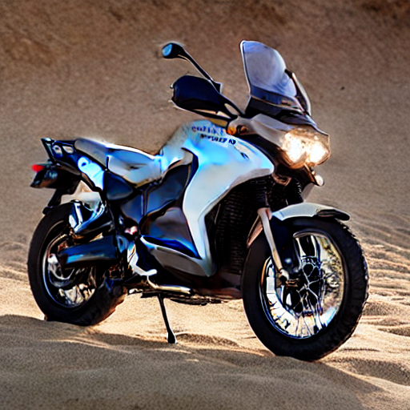
cand_4125fa7ef11a
Role: explore
Seed: 2860330143
z: [-0.02906798187382561, -0.4544988777670129, -0.21390028947650747, 0.0035495206332720047, -0.10199526401313223]
User rating: 2
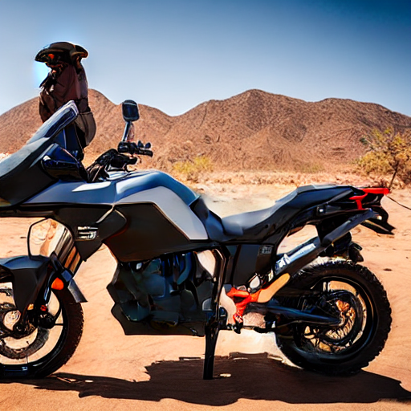
cand_7dc55497e280
Role: explore
Seed: 2818215896
z: [0.003946917254362421, -0.06644339527447582, 0.37653941068423663, 0.09364242447893228, -0.07948957658565513]
User rating: 1
The incumbent now reads like the strongest finished hero image, so preserve it as the final preferred direction.
{
"ratings": {
"cand_23f831bca8b3": 5,
"cand_4125fa7ef11a": 2,
"cand_7dc55497e280": 1,
"cand_9ef1e60d8322": 4,
"cand_bf044f7f1fc0": 3
},
"winner_candidate_id": "cand_23f831bca8b3"
}
{
"method": "average",
"updater": "winner_average",
"winner_candidate_id": "cand_23f831bca8b3"
}
The session ended at round 5 with incumbent candidate cand_23f831bca8b3.
This report demonstrates system value by showing that the workflow does not stop at one prompt and one image. It keeps the user in a controlled compare-select-update loop with visible evidence for what was proposed, what was preferred, and how the next state was chosen.
Backend session traces and the auto-generated audit report also exist under E:\Projects\StableSteering\output\examples\real_e2e_example_run\data\traces.